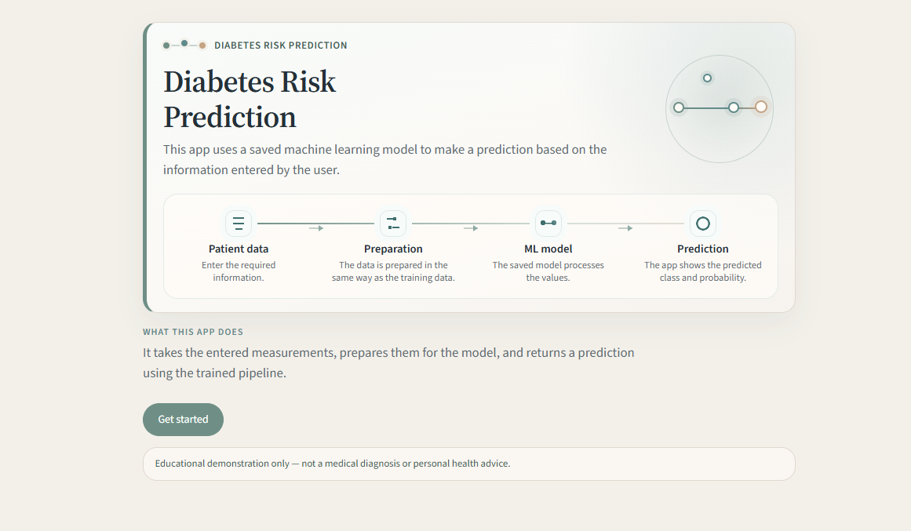
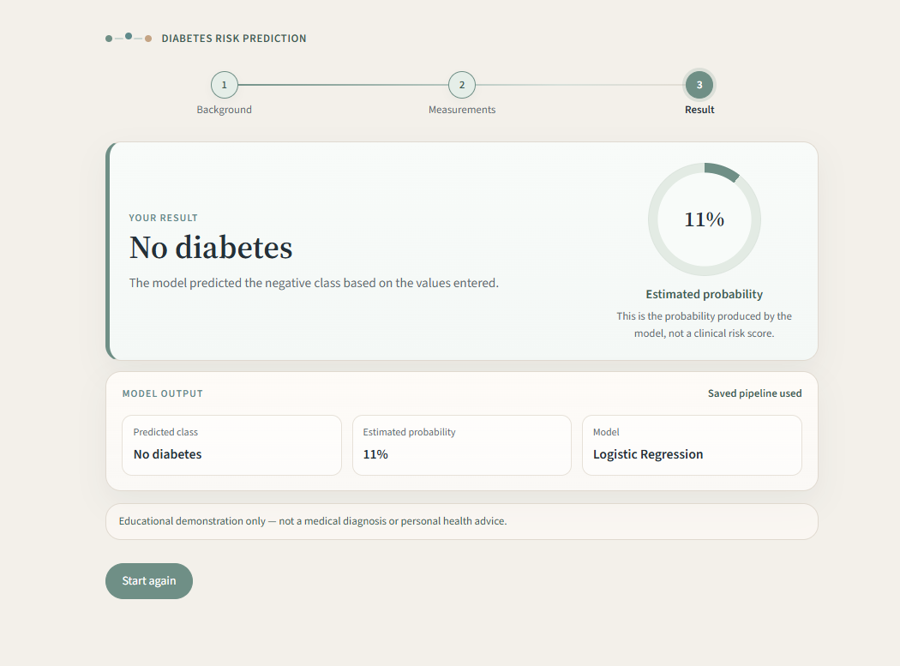

Individual Project
Diabetes Machine Learning Project
This is my own project, and I am still developing it. It uses the Pima Indians Diabetes dataset. I did not want it to stay as one script, so it now goes from preparing the data through to a scikit-learn pipeline, tests, prediction, and a Streamlit interface with a multi-step flow.
Python · scikit-learn · Streamlit · pytest · joblib
- Data
- Data Preparation
- Machine Learning Pipeline
- Testing
- Prediction
- Streamlit Interface


Work so far
- Data preparation and cleaning
- Invalid zero values treated as missing values for the relevant medical features
- scikit-learn pipeline
- Model training and testing
- Model saved with joblib
- Prediction
- Automated tests
- Streamlit interface with a multi-step flow